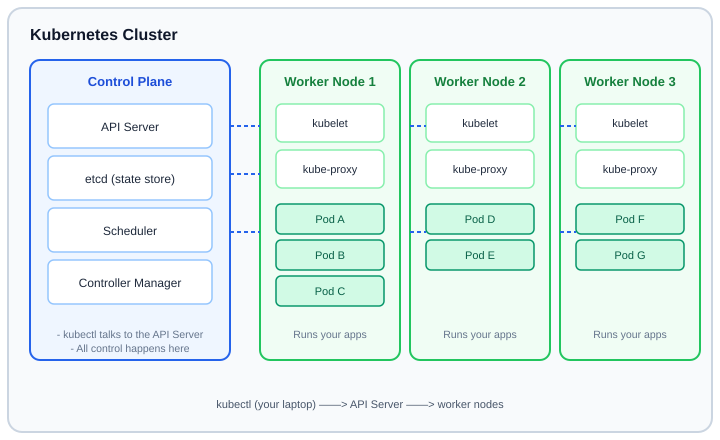

Kubernetes for Beginners: Your Complete Getting-Started Course
A complete, hands-on tutorial for complete beginners. You will learn what Kubernetes is and why the whole industry uses it, master the core concepts (Pods, Deployments, Services, ConfigMaps, Secrets), install a real cluster on your own laptop with Minikube or kind, deploy and scale an Nginx application, expose it to the world, and then explore rolling updates, persistent volumes, Ingress, monitoring, and best practices used by real teams. Every chapter includes concrete commands, YAML files, tables, and exercises you can run yourself.
Prerequisites: Basic familiarity with the command line (terminal), and a laptop with at least 4 GB of RAM and 20 GB of free disk space. No cloud account, no docker experience, and no Kubernetes knowledge is required — the whole course runs locally and free of charge.
Table of Contents
- 1. Introduction: What is Kubernetes and Why Use It? Containers vs. orchestration, the control plane and worker nodes, and the three big benefits — scalability, self-healing, and portability
- 2. Core Concepts Pods, Nodes and Clusters; Deployments, ReplicaSets and Services; ConfigMaps and Secrets — with clear comparisons and diagrams
- 3. Setup Guide Install kubectl, set up a local cluster with Minikube or kind, and connect to it from your terminal
- 4. Hands-On: Deploying Nginx Deploy a real application, scale it, expose it with NodePort and LoadBalancer, and use ConfigMaps and Secrets inside a pod
- 5. Advanced Topics Rolling updates and rollbacks, Persistent Volumes & PVCs, Ingress controllers, and monitoring & logging basics
- 6. Best Practices Resource requests and limits, namespaces, and security basics — RBAC and Network Policies
- 7. Conclusion & Next Steps Summary of everything you learned, a roadmap for going further, and links to the official Kubernetes documentation